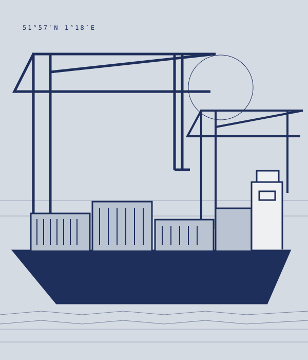

The Undercurrent
FORTNIGHTLY. FROM ROTTERDAM. ISSUE 84, 24 SEPTEMBER 2026.
The quiet month at Felixstowe
Open the letter ↓
Box volumes through Felixstowe fell nine per cent in August, which nobody announced and everybody noticed. The reason is not demand. It is a berth that has been out of service since June and a rota dispute that neither side wants written down.
Every other Thursday, about eleven hundred words on how physical things move.
Most shipping coverage is either a trade weekly written for people who already work in it, or a newspaper piece that explains what a container is. The Undercurrent sits between the two. It assumes you are curious and busy, it names ports and ships and people, and it tells you what a number means rather than just printing it.
The quiet month
at Felixstowe
Box volumes through Felixstowe fell nine per cent in August, which nobody announced and everybody noticed.
The reason is not demand. It is a berth that has been out of service since June and a rota dispute that neither side wants written down.
JORIS KAMP / ROTTERDAMIssue 84, opened. Fortnightly since March 2023.
EXCERPT PROVIDED IN THE BRIEF. REPORTING IS SAMPLE COPY.Recent letters.
No letters match that search.
Organisations listed in the original concept. Illustrative readership, not endorsements.
“A port is a promise that a thing will be somewhere on a Tuesday, and almost everything else follows from keeping it.”ISSUE 71
“Nobody decided that the internet would run along the seabed in a cable the width of a garden hose. It simply turned out to be cheapest.”ISSUE 82
“The empty container is the most honest object in world trade. It goes where the money is not.”ISSUE 80
A letter from
the other side.
I am Joris Kamp. I spent eleven years as a terminal planner in Rotterdam and four more consulting for ports that wanted to be told what they already knew.
The Undercurrent started as an email to nine former colleagues. It is now read by most of them, plus about nine thousand other people, which still seems unlikely.
I write it on Wednesday evenings and send it on Thursday mornings. If something in it is wrong, reply and I will correct it in the next issue and say so.
Joris Kamp
Issue 85 goes out on 8 October.
Original issue schedule is sample copy. Subscription confirmation is local only. No email is sent or saved.